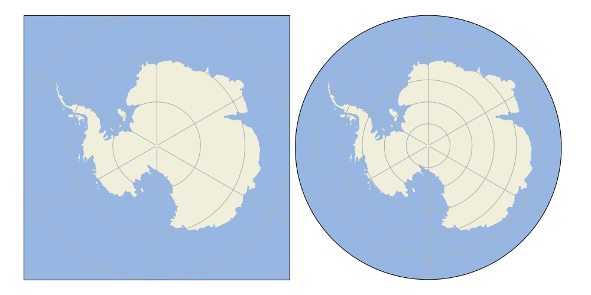

Note
Click here to download the full example code
Custom Boundary Shape¶
This example demonstrates how a custom shape geometry may be used instead of the projection’s default boundary.
In this instance, we define the boundary as a circle in axes coordinates. This means that no matter the extent of the map itself, the boundary will always be a circle.
import matplotlib.path as mpath
import matplotlib.pyplot as plt
import numpy as np
import cartopy.crs as ccrs
import cartopy.feature as cfeature
def main():
fig = plt.figure(figsize=[10, 5])
ax1 = fig.add_subplot(1, 2, 1, projection=ccrs.SouthPolarStereo())
ax2 = fig.add_subplot(1, 2, 2, projection=ccrs.SouthPolarStereo(),
sharex=ax1, sharey=ax1)
fig.subplots_adjust(bottom=0.05, top=0.95,
left=0.04, right=0.95, wspace=0.02)
# Limit the map to -60 degrees latitude and below.
ax1.set_extent([-180, 180, -90, -60], ccrs.PlateCarree())
ax1.add_feature(cfeature.LAND)
ax1.add_feature(cfeature.OCEAN)
ax1.gridlines()
ax2.gridlines()
ax2.add_feature(cfeature.LAND)
ax2.add_feature(cfeature.OCEAN)
# Compute a circle in axes coordinates, which we can use as a boundary
# for the map. We can pan/zoom as much as we like - the boundary will be
# permanently circular.
theta = np.linspace(0, 2*np.pi, 100)
center, radius = [0.5, 0.5], 0.5
verts = np.vstack([np.sin(theta), np.cos(theta)]).T
circle = mpath.Path(verts * radius + center)
ax2.set_boundary(circle, transform=ax2.transAxes)
plt.show()
if __name__ == '__main__':
main()
Total running time of the script: ( 0 minutes 0.025 seconds)